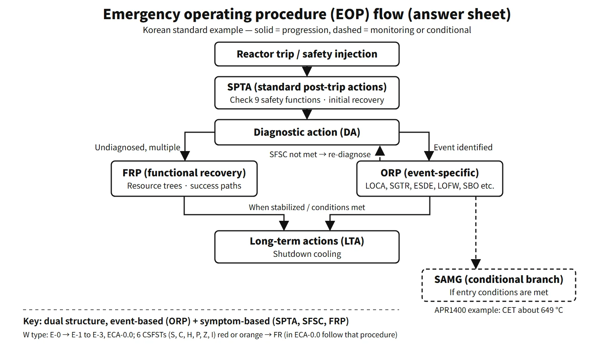

Accidents, Safety Analysis & Severe Accidents · C-SA-015
Emergency Operating Procedures (EOP, Symptom-Based) — The Dual Event-Based and Symptom-Based Structure with SPTA, ORP and FRP
Event-specific recovery when the diagnosis is right, function-based recovery when it is not — the dual structure adopted after TMI.
Emergency operating procedures (EOPs) are the procedures with which main control room operators, after a reactor trip or safety injection, confirm and restore safety functions and bring the plant to a stable state in design-basis accidents and in multiple-failure situations before core damage. Current EOPs combine event-based procedures, which diagnose the cause of the accident and respond to it, with symptom-based procedures, which judge the safety functions from measured symptoms and restore the threatened functions first.
The vendor's generic technical guidelines (for example ERGs, EPGs or "emergency operating guidelines", EOGs) are turned into plant-specific emergency operating procedures.
Principle and mechanism
From event-based to symptom-based — the lesson of TMI
In the 1979 TMI-2 accident, the pressurizer power-operated relief valve (PORV) stuck open. Because the pressurizer level was high, the operators concluded that the system was full of water and throttled high-pressure safety injection. In fact coolant kept escaping, and about half of the core melted. The accident showed that an approach which first names the accident and then follows that accident's procedure breaks down when the diagnosis is wrong or failures overlap.
The NRC required reanalysis of accidents and improvement of the EOPs under item I.C.1 of NUREG-0737 (1980), and set out how to write them in NUREG-0899 (August 1982). The sequence is technical guidelines → procedures generation package (PGP) → writer's guide → verification and validation (V&V) → training. The owners' groups of each reactor type wrote the technical guidelines: the ERGs for Westinghouse plants and the CEN-152 EPGs for CE plants. In accepting CEN-152 Rev.1 in 1983 (GL 83-23), the NRC judged that its structure — "optimal recovery guidelines for simple events, functional recovery guidelines for everything else" — met the requirement for symptom-based response.
| Event-based (ORP) | Symptom-based (SPTA, SFSC, FRP) | |
|---|---|---|
| Starting point | Result of accident diagnosis | Measured process variables |
| Strength | Fastest, optimal recovery when the diagnosis is right | Works despite misdiagnosis, multiple failures and unexpected combinations |
| Weakness | Vulnerable to misdiagnosis and multiple failures | Less detailed than accident-specific actions |
Flow of the CE-type EOP
The EOPs of CE-type plants such as the OPR1000 and APR1400 follow this structure; the flow is as follows.
- Standard post-trip actions (SPTA): right after the trip, the nine safety functions are checked and initial recovery actions taken. If all are satisfied, go to the reactor trip procedure; if even one is not, go to diagnosis.
- Diagnostic action (DA): the event is identified with a diagnostic flow chart. If a single event is identified and an ORP applies, go to that emergency procedure. If there are multiple events or diagnosis is impossible, go to the recovery procedures. Cautions note not to ignore early indications and not to diagnose an SGTR from radiation alarms alone.
- Seven optimal recovery procedures (ORPs): reactor trip, LOCA, SGTR, excess steam demand event (ESDE), total loss of feedwater, loss of offsite power and forced circulation, and station blackout (SBO). While an ORP is carried out, the safety function status check (SFSC) is repeated. If it is not satisfied, re-diagnose and, if needed, move to the recovery procedures.
- Functional recovery procedures (FRPs): each safety function has a resource assessment tree, listing the means of achieving the function as success paths. For reactivity control the success paths are CEA insertion → CVCS boration → SIS; for heat removal, SG cooling → once-through cooling (feed and bleed). The SFSC status is satisfied, challenged or jeopardized, and recovery is carried out in the order jeopardized → challenged → satisfied.
- Then move to long-term actions after stabilization, or transfer to the SAMG if its entry conditions are met.
![Flow chart of CE-type emergency operating procedures: reactor trip or safety injection leads to standard post-trip actions checking 9 safety functions; if all are satisfied go to the reactor trip procedure, otherwise to diagnostic action, which leads to one of seven optimal recovery procedures when an event is identified or to the functional recovery procedures (satisfied, challenged, jeopardized; resource trees and success paths) when diagnosis fails or events are multiple; a dashed loop shows the safety function status check during ORP sending the operator back to diagnosis; both lead to long-term actions or a conditional transfer to SAMG at about 649 °C core exit temperature; a digital control room console image and three summary chips on the left](../../assets/images/concepts/c-sa-015-emergency-operating-procedures/fig1-eop-structure-flow.webp)
Westinghouse ERGs
Diagnosis in E-0 (reactor trip or safety injection) leads to E-1 (loss of reactor or secondary coolant), E-2 (faulted SG isolation), E-3 (SGTR), ECA-0.0 (loss of all AC power) and so on. Separately, six critical safety function status trees (CSFSTs) are monitored. The priority is subcriticality (S) → core cooling (C) → heat sink (H) → RCS integrity (P) → containment (Z) → inventory (I). A red path is an extreme challenge, so the procedure in progress is stopped and the corresponding FR procedure entered. An orange path is entered when there is no red. For example, a core exit temperature (CET) of 1,200 °F (649 °C) or more is a red core-cooling path, leading to FR-C.1. While ECA-0.0 is being performed, the CSFSTs are only monitored, and transitions to FR procedures follow the instructions of that procedure.
What it means in a plant
List of safety functions — differences by reactor type
![Mapping of the nine CE-type safety functions (reactivity control, vital auxiliaries, RCS inventory, RCS pressure, core heat removal, RCS heat removal, containment isolation, containment temperature and pressure, containment combustible gas) to the six Westinghouse critical safety functions in priority order (subcriticality S, core cooling C, heat sink H, RCS integrity P, containment Z, inventory I), with vital auxiliaries having no separate CSF, dashed lines for partial correspondence, and the status scales satisfied/challenged/jeopardized versus green/yellow/orange/red](../../assets/images/concepts/c-sa-015-emergency-operating-procedures/fig2-safety-function-map.webp)
The list of safety functions differs by reactor type. The CE-type design (OPR1000, APR1400) uses nine: reactivity control, maintenance of vital auxiliaries (power), RCS inventory control, RCS pressure control, core heat removal, RCS heat removal, containment isolation, containment temperature and pressure control, and containment combustible gas control. Some plants' recovery procedures combine core and RCS heat removal into one procedure (HR), giving eight. How functions are grouped can differ by unit and reactor type. Westinghouse has no power CSF: power is treated as a common support condition for several functions and handled by event procedures such as ECA-0.0.
Computerized procedures
The APR1400 performs EOPs on the computerized procedure system (CPS) at the operator workstations. The CPS provides the step flow, related parameters, links to control displays and monitoring of continuous-action steps, and all operators share the progress. If all workstations are lost, safe shutdown and EOP execution continue from the safety console.
Links with SGTR and MSLB
Event-specific strategies belong to each ORP. For an SGTR, the core is the three- or four-step strategy of identifying and isolating the ruptured SG → cooling with the intact SGs → depressurizing to equalize pressure → terminating SI. For an ESDE, the key points are isolating the faulted SG and managing PTS during overcooling.
Upper-head void during a LOCA
With natural circulation or the RCPs stopped, flow in the reactor vessel upper head stagnates and the head stays hot. If the RCS is then depressurized, the head fluid falls below its saturation pressure and flashes. The symptoms are an abnormal rapid rise in pressurizer level during depressurization or spray, and a falling upper-head level indication (RVLIS). The EOP responds by repressurizing, restarting an RCP when conditions allow, adjusting the cooldown and depressurization rates, and venting through the reactor coolant gas vent system (RCGVS). Venting is stopped when the upper-head level recovers, the pressurizer level limit is reached, the subcooling criterion is reached, or the containment hydrogen concentration limit is reached.
Regulatory and design criteria
The US requirements below, which shaped the symptom-based approach after TMI, and the IAEA guidance are examples of the applicable criteria.
| Basis | Key point |
|---|---|
| NUREG-0737 I.C.1 (1980) | TMI follow-up, reanalysis of transients and accidents and improvement of EOPs |
| NUREG-0899 (August 1982) | EOP writing guidance: technical guidelines, PGP, writer's guide, V&V, training |
| 10 CFR 50.34(b)(6)(ii), SRP 13.5.2.1 | Operating procedure requirements and review |
| CEN-152 / GL 83-23 (1983.7.29) | CE-type EPGs, ORG and FRG structure accepted |
| NUREG-1358 (1989) | Lessons from EOP inspections (consistency of technical guidelines and procedures, V&V) |
| IAEA SSG-54 (2019) | EOPs = DBAs and DEC without core damage; SAMGs = severe accidents |
Easily confused pairs
| Abnormal operating procedure (AOP) | Emergency operating procedure (EOP) | SAMG | Accident management programme | |
|---|---|---|---|---|
| Timing | Abnormalities before a trip | After trip or SI | After core damage | All stages (overarching programme) |
| Approach | Event-based | Event-based + symptom-based | Symptoms and strategy evaluation | Scope, strategies, assessment |
| Goal | Avoid trip, recover from abnormality | Prevent core damage | Keep barriers, reduce releases | Demonstrate risk goals |
| User | Operators | Operators | Technical support centre, emergency organization | Licensee, regulator |
Transfer to the SAMG is not the normal end of an EOP but a conditional branch. Typical SAMG entry criteria combine a CET of 649 °C (1,200 °F) or more with failure of EOP core-cooling recovery; the detailed judgement follows each plant's guideline.
Key points at a glance
- Definition: operator procedures that restore and maintain safety functions after trip or SI in DBAs and in multiple failures before core damage.
- Background: TMI-2 misdiagnosis → NUREG-0737 I.C.1, NUREG-0899 (1982).
- Dual structure: event-based ORPs + symptom-based SPTA, SFSC and FRPs; symptom-based does not mean no diagnosis — diagnosis runs alongside.
- Flow: trip → SPTA (9 safety functions) → DA → 7 ORPs / FRPs → long-term actions.
- SFSC: satisfied, challenged, jeopardized; recover jeopardized first; repeated during ORPs.
- FRP: resource assessment trees and success paths (e.g. CEA → CVCS → SIS).
- Westinghouse ERG: E-0 → E-1 to E-3, ECA-0.0; 6 CSFSTs S, C, H, P, Z, I; red and orange paths.
- Boundary: transfer to SAMG when, typically, CET ≥ 649 °C AND core-cooling recovery fails.
- Computerization: APR1400 CPS; safety console if it is lost.
